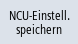

Sie haben die Möglichkeit, die vorgenommenen Einstellungen der Steuerung als Datei zu speichern.
Im Fenster "Netzwerkeinstellungen speichern: Ablage auswählen" wählen Sie einen Zielordner. Dort wird die Netzwerkkonfiguration abgelegt bzw. eine vorhandene Datei ausgewählt, die mit den neuen Einstellungen überschrieben wird.
Vorgehensweise
| | 1. | Die Netzwerkübersicht ist geöffnet und Sie haben Netzwerkeinstellungen vorgenommen. |
|  | 2. | Drücken Sie den Softkey NCU-Einstellungen speichern". Das Fenster "Netzwerkeinstellungen speichern: Ablage auswählen" wird geöffnet. |
| | 3. | Wählen Sie den Ordner, in dem die Netzwerkkonfiguration abgelegt wird. Wenn bereits eine Datei vorhanden ist, wird diese überschrieben. |
| | | - ODER - |
| | | Drücken Sie den Softkey "Neues Verzeichnis", um ein neues Verzeichnis anzulegen. |
| | | - ODER - |
 | | Drücken Sie den Softkey "Suchen", um z.B. den Ablageort der Netzwerk-Konfigurationsdatei zu finden. |
 | 4. | Drücken Sie den Softkey "Weitersuchen", wenn die im Suchlauf gefundene Datei nicht der gewünschten Konfigurationsdatei entspricht. |
 | 5. | Drücken Sie den Softkey "Abbruch", um die Einstellungen zu verwerfen. |
| | | - ODER - |
 | | Drücken Sie den Softkey "OK", um die Netzwerkkonfiguration zu speichern. |